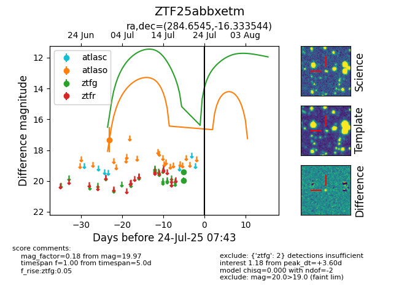

Target ZTF25abbxetm at 2025-07-24 07:43, see:
FINK: fink-portal.org/ZTF25abbxetm
Lasair: lasair-ztf.lsst.ac.uk/objects/ZTF25abbxetm
ALeRCE: alerce.online/object/ZTF25abbxetm
alt names
ZTF25abbxetm (ztf,fink)
coordinates:
equatorial (ra, dec) = (284.6545,-16.33354)
galactic (l, b) = (19.0763,-8.91616)
photometry
last atlaso=17.33, ztfg=19.97
1 atlaso, 2 ztfg detections
